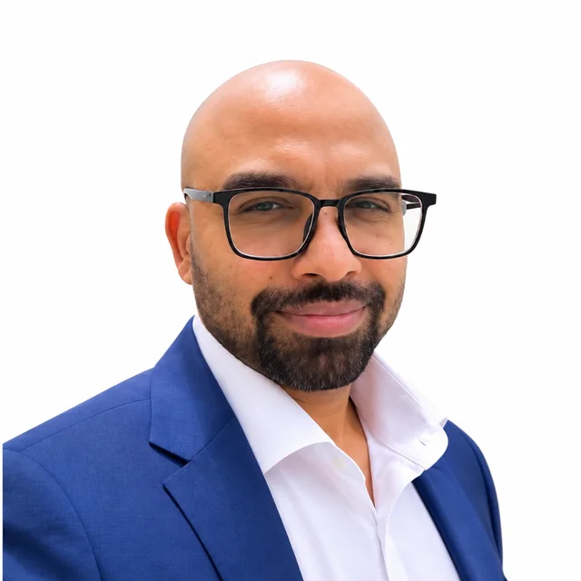

01 / ALIGN
Strategy & portfolio
Translate organizational priorities into governed initiatives, transparent reporting and informed investment decisions.

PMO & Digital Governance Lead | Program & Portfolio Management | Digital Transformation | IT & AI Governance
Connecting enterprise strategy, governance and technology delivery to measurable business outcomes — with a practical focus on responsible AI, risk and organizational accountability.
Executive reporting, stage gates, RAID oversight, decision traceability and governance operating models.
Explore governance initiatives ↗I lead PMO and digital governance initiatives across portfolio oversight, risk and change management, IT service governance, executive reporting, budgeting, audit coordination and enterprise technology transformation. My approach combines disciplined controls with practical execution: making priorities visible, decisions traceable and outcomes measurable.
Translate organizational priorities into governed initiatives, transparent reporting and informed investment decisions.
Establish policy, approval workflows, risk ownership, change controls and audit-ready decision trails.
Coordinate enterprise platforms, cloud modernization and operational improvement across business and IT teams.
Portfolio oversight, stage gates, RAID, executive KPIs, benefits tracking and decision governance.
Enterprise platforms, cloud modernization, ERP, workflow automation and business–IT alignment.
Incident, problem, change, CAB/eCAB, service controls, SLAs, policies and audit readiness.
AI policy development, risk-based controls, oversight, accountability and organizational readiness.
Cross-functional coordination, stakeholder alignment, delivery assurance and controlled change.
Technology budgets, cost oversight, procurement coordination, vendor management and performance reporting.
From enterprise governance and ERP to digital services, cloud and infrastructure. Every initiative remains available — filter, search, or open a case study to explore the scope, role and delivery focus.
Start with three representative initiatives, or browse the complete 15-project portfolio below.
Showing all 15 initiatives
Leading the development of an integrated PMO and digital governance operating model, including governance policies, portfolio controls, risk and change registers, executive reporting and audit-readiness practices.
Delivery focus · Designed governance workflows, approval controls and reporting frameworks; coordinated stakeholders across applications, infrastructure and business functions.
Outcome / current status · Established a structured foundation for portfolio oversight, governance accountability and management decision support.
Leading phased development of a bilingual governance portal using Python, Streamlit and SQLite, with role-based permissions, executive overview, decision register and audit controls.
Delivery focus · Defined roadmap and acceptance criteria; coordinated development and validation of the initial foundation. Future modules cover risk, change, portfolio and audit governance.
Outcome / current status · Initial portal foundation validated; enterprise multi-user deployment, concurrency hardening and further development remain in progress.
Managed a self-service donation kiosk initiative delivered in response to regulatory requirements of Dubai’s Islamic Affairs and Charitable Activities Department (IACAD).
Delivery focus · Coordinated banking contractual arrangements, payment terminals, manufacturers, telecom connectivity and cloud/infrastructure readiness.
Outcome / current status · Connected regulatory, payment and technical delivery requirements in one coordinated program.
Managed delivery coordination for the transition from Microsoft Dynamics GP to SAP Business One, including payment integrations involving Telr and DubaiPay.
Delivery focus · Coordinated finance, application teams, payment partners and vendors across requirements, testing and deployment readiness.
Outcome / current status · Integrated financial and payment workflows supporting enterprise operations.
Oversaw cloud and workplace modernization involving Microsoft Azure and Microsoft 365, with technical teams responsible for Azure infrastructure, Entra ID, Intune and security controls.
Delivery focus · Aligned technical workstreams, access and security requirements, migration dependencies and operational handover.
Outcome / current status · Coordinated migration and adoption across cloud, identity and endpoint management.
Developed ITIL-aligned incident, problem, request and change management policies and workflows, including escalation procedures and change approval controls.
Delivery focus · Established governance templates, approval pathways and service reporting structures with operational stakeholders.
Outcome / current status · Stronger process clarity and management visibility across service and change workflows.
Developing a configurable digital booking and ticketing platform with a broader multi-service vision. Current pilot planning is focused on bus transportation operators and selected routes.
Delivery focus · Defined mobile/PWA booking flows, QR e-ticketing, user/agent/admin roles, operator onboarding and payment requirements. Additional service categories remain future roadmap opportunities.
Outcome / current status · Product development and pilot preparation; no claim of a launched multi-sector platform.
Led enterprise voice modernization, consolidating approximately 30 PBX environments into a unified Microsoft Teams Direct Routing approach across UAE branches.
Delivery focus · Coordinated telecom providers, internal teams, migration planning, testing, cutover and operational handover.
Outcome / current status · Standardized enterprise voice service management and simplified support across locations.
Led delivery of a mobile donation platform connecting telecom short codes, SMS gateways, CRM and payment-related services.
Delivery focus · Managed telecom coordination, integration dependencies, testing, reporting requirements and operational handover.
Outcome / current status · Enabled a more streamlined mobile donation channel and centralized reporting.
Managed development of a multi-center digital system for student registration, attendance, assessments and administrative reporting.
Delivery focus · Coordinated academic stakeholders, solution requirements, vendors, testing, user adoption and handover.
Outcome / current status · Digitized core academic workflows and improved information visibility across centers.
Led delivery of technology infrastructure for five new branches, including LAN, Wi-Fi, telephony, security systems and connectivity to shared services.
Delivery focus · Coordinated site readiness, suppliers, network/security teams, testing and operational handover.
Outcome / current status · Supported branch openings with standardized connectivity and enterprise infrastructure.
Led separate initiatives to centralize surveillance monitoring and standardize enterprise print management across multiple sites.
Delivery focus · Managed vendor and technical coordination, rollout planning, testing, change adoption and handover.
Outcome / current status · Improved centralized operational oversight and standardization.
Developed governance frameworks, risk and decision reporting practices, portfolio dashboards and executive management reporting.
Delivery focus · Aligned risk, performance and approval information to support portfolio review and governance decisions.
Outcome / current status · More structured portfolio visibility, accountability and decision support.
Coordinated infrastructure modernization, branch connectivity and unified communications initiatives across internal teams and external providers.
Delivery focus · Managed stakeholder dependencies, vendor coordination, implementation planning and transition considerations.
Outcome / current status · Supported continuity and modernization of enterprise communications services.
Designed a centralized spare parts sales and inventory system supporting multiple branches.
Delivery focus · Coordinated business requirements and standardized inventory, pricing and sales workflows.
Outcome / current status · Improved consistency of inventory and sales information across branches.
Project descriptions distinguish delivered work from work in progress. Technical configuration was performed by the relevant specialist teams. Quantitative outcomes should be supported by internal evidence when requested.
My AI focus is on how organizations adopt, govern and oversee AI responsibly: policies, risk controls, decision rights and integration with established enterprise governance. I also use AI-assisted tools to accelerate solution design and reporting, with human validation and governance oversight.
Contributed to AI-related governance policies and procedures within the digital transformation operating environment.
Apply AI-assisted approaches to requirements, reporting and governance solution design while retaining review and decision accountability.
PMI and Microsoft AI-related courses; CPMAI core preparation training completed, with certification exam preparation in progress.
Clear ownership, risk-based escalation, documented approvals and reporting that distinguishes verified results from pending decisions.
Practical operating models that connect business sponsors, IT specialists, vendors and assurance stakeholders without unnecessary bureaucracy.
Public-sector technology initiatives and operational systems.
Asset, infrastructure and telecom project management in the UAE.
ERP, cloud, digital platforms and enterprise modernization.
Portfolio oversight, IT governance, risk, change, audit and responsible AI policy.
Formal certifications are separated from certificates of completion, specialized training and examinations still in progress.
Open to conversations about PMO leadership, program and portfolio management, digital transformation, IT governance and responsible AI governance.
Dubai, United Arab Emirates · +971 55 302 6880